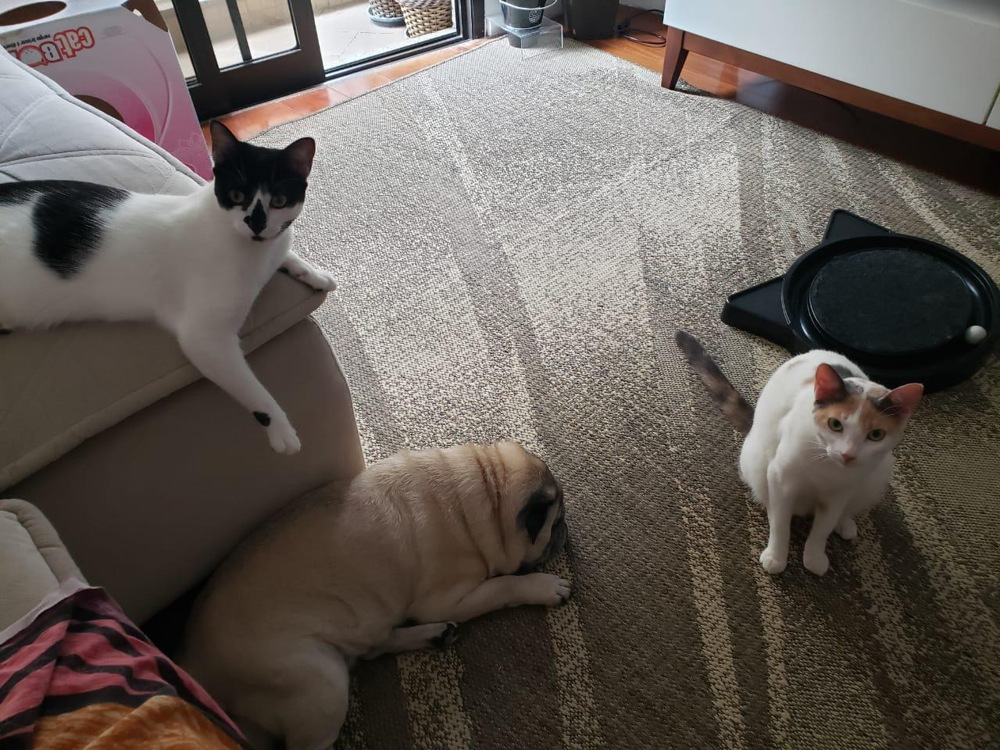
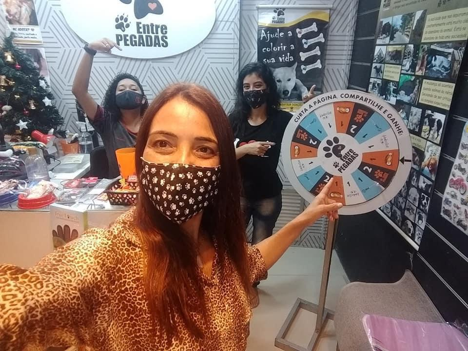

Olívia e Alice - Contam seu Final Feliz
Melhor do que uma adoção de gatinhos é uma adoção conjunta. E foi assim que a humana da Olívia (ex-Baby) e Alice (ex-D.Flor), gateira de primeira viagem, mudou completamente o destino dessas duas lindezas.

Para auxiliar com as despesas veterinárias A Lojinha do PEP, que acompanha as campanhas, possui diversos produtos que tem toda a sua renda revertida para o tratamento dos animais amparados pelo Projeto. As doações em dinheiro podem ser trocadas por presentes de acordo com o valor.